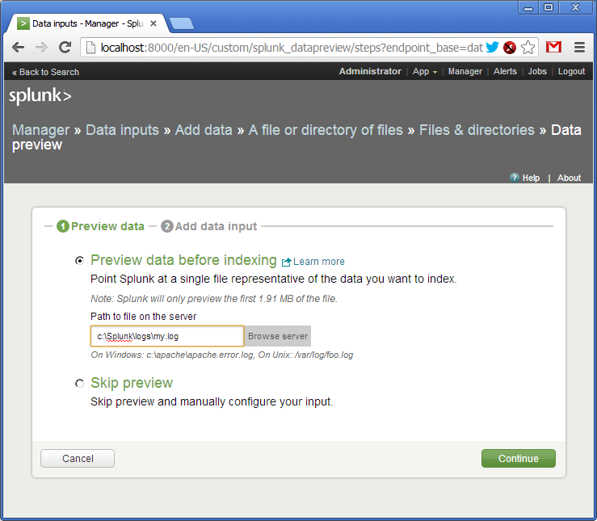
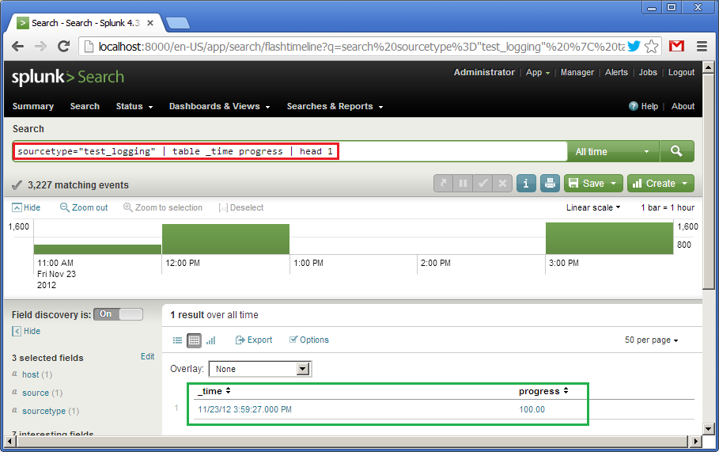
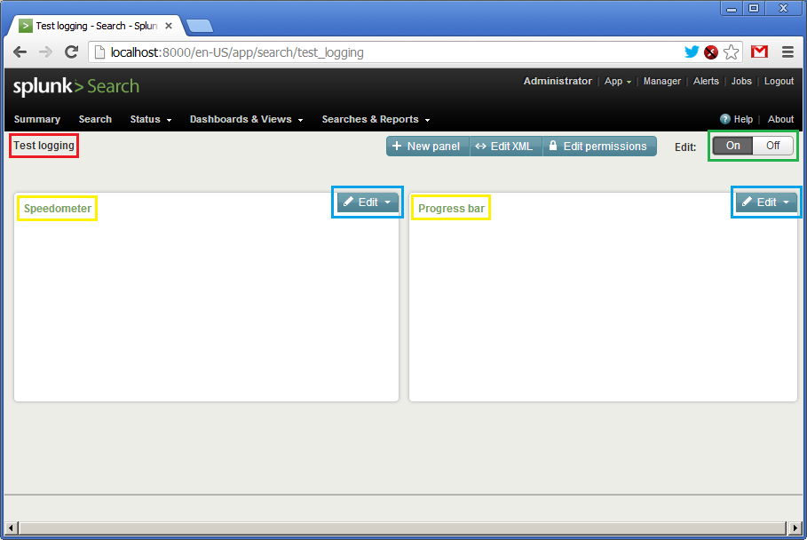

Creating a live progress bar using Splunk
Splunk is a tool for managing and analysing logs. In short, Splunk does the following: there is a Splunk server which stores, indexes and allows analysing log files, and there are client machines (application servers) generating logs and shipping them to the Splunk server. In turn, the Splunk server can be configured as a cluster of physical machines. Logs stored inside Splunk are split amongst these machines, and also Splunk uses MapReduce for querying. There are plenty of ways to deliver logs to the Splunk server (or cluster):
- a special log forwarder (from Splunk) which can efficiently send log updates to the server
- as regular files via NFS or SMB
- SNMP
- directly over TCP/IP (for example, instead of creating log files in the first place)
On Windows Splunk can take information from Windows Events, Performance Counters or Registry.
For Splunk logs are textual files split into lines. When indexing logs Splunk parses log lines into fields, for example, in the “name=value” format (which is also configurable though). Then using a special query language called SPL it allows manipulating with these fields: sorting, aggregation, computed fields, creating views and tables, external dictionary lookups (for instance, to RDBMS), and, of course, creating various graphic representations of data. Even though normally SPL operates with individual log lines, it supports multi-line queries, which can be useful, for example, to extract transactions or any other activities generating multiple log records.
As Splunk creators state, all logs kept and indexed by Splunk despite of their age are equally available for querying. There is no concept of archiving. Of course, machines running Splunk should correspond to the volume of logs being processed.
Also Splunk states itself as “Google for logs”, but let’s leave it without comments.
The UI of Splunk is web. It allows creating dashboards, which in turn can be presented as a Splunk app. Splunk has its own app store, where most of apps are free though. There are apps already developed, for example, for UNIX syslog, Apache logs, Microsoft Exchange, etc.
Splunk software is freely available on the official website. The licensing model is based on volumes of logs processed daily. Under some small threshold Splunk is free. This threshold is surely enough for evaluation.
I would recommend a book called Exploring Splunk for those who want quickly dig into Splunk and figure out its main features. This book provides very solid overview of SPL and other concepts how Splunk works.
In this article I would like to show a real example of using Splunk. This exercise can be repeated in half an hour. The only prerequisite is to download and install Splunk on your operating system. Then just follow my instructions.
The example is a bit unusual though. Traditionally, logs are used for post factum analysis. But nothing really prevents from picking up updates on the fly and building “live” indicators based on logs. Agreed, my example may look a bit artificial, but I want to show how quickly to feed data into Splunk and formalize it, and finally create a dynamic UI with it.
Let’s begin with a simple script in Ruby. It generates log records containing a number representing its completion (from 0 to 100%).
require 'date'
duration = 60*1
update_period = 0.5
i = 0
while i <= duration do
progress = i * 100.0 / duration
msg = "%s progress=%05.2f\n" % [DateTime.now, progress]
puts msg
open("logs/my.log", 'a') { |f| f << msg }
i = i + update_period
sleep update_period
end
The log records may look like:
2012-11-23T15:58:54+00:00 progress=45.00
2012-11-23T15:58:55+00:00 progress=45.83
2012-11-23T15:58:55+00:00 progress=46.67
2012-11-23T15:58:56+00:00 progress=47.50
2012-11-23T15:58:56+00:00 progress=48.33
2012-11-23T15:58:57+00:00 progress=49.17
2012-11-23T15:58:57+00:00 progress=50.00
We will develop a dashboard in Splunk, which displays the percentage in the form of a cool indicator taking updates from logs.
For simplicity we run everything on a single machine, and Splunk will be taking log updates directly from a file.
So, you have already installed Splunk, and if you open “http://localhost:8080” in your browser you should be able to login as the “admin” user.
Then in menu follow to: “Manager -> Data Inputs -> Add data -> A file or directory or files”. Here we specify the file and directory name with the logs (in our case just a single file).

Confirm creating a source of logs (source type). As I said, logs can be delivered to Splunk in various ways. Each way can be named and addressed as a source type.

The log has been added. We see that Splunk has picked up the file and already parsed its lines into fields. Out of the box Splunk understands many date and time formats, but it is configurable.

Now we give a name to our source type - “test_logging” and save the settings.

Now we get back to the main page and type in our first SPL query in the search bar (in red):
sourcetype="test_logging" | table progress as float
It says: take logs from the “test_logging” data source, create a table with one column called “progress” taking values from the corresponding field, set the type of “progress” to float. At the bottom (in blue) we see the result of the query (own log already has some data). SPL uses the concept of UNIX pipes (|) feeding output from one command to the next one.

So, we have the table. Now let’s create a widget. Due to simplicity of our data (one single field) we can represent it as a speedometer gauge. Click on “Formatting options” (in blue) and set the chart type to “radial gauge” (in red). And here is our cool widget:

The first widget is ready. Now let’s create an alternative one looking differently. It will also represent the value of the progress but in the form of a horizontal bar moving from left to right. This is the query:
sourcetype="test_logging" | table _time progress | head 1
It says: using data from the “test_logging” source type create a table with two fields, “_time” and “progress”, and then take only the first line from it. Default sorting is descending by “_time”. At the bottom (in green) we see the result of the query.

Now click on “Formatting options”, choose “bar” (in green), set the interval for the Y-axis from 0 to 100. For some reason, the X-axis is vertical here (this axis will represent “_time”), and the Y-axis is horizontal (this one will show “progress”). Because our query on the previous picture already shown “100”, the widget is fully filled.

Describing the first widget I deliberately skipped how to save the query. We will do it now. We click on “Create” and then “Dashboard panel…” (in red) and save the settings. We name the first widget as “Speedometer” and the second - “Progress bar”.

Along with saving the first widget we will be asked to create a new panel, a dashboard. Let’s call it “Test logging”. When saving the second widget we will add it to the already created one.
Finally, we click on “Dashboards & View”, select your dashboard and it will be shown like:

There is no data here, so the panels are empty. We see the name of the dashboard (in red), the names of the widgets (in yellow) and two “Edit” buttons (in blue) allowing updating queries and visual representation on the fly. Before starting our Ruby script, we need to click on the both “Edit” buttons and set the time interval from “rt-1s” to “rt”. Such interval means getting updates each second.
Now let’s click on “On” and kick off the script!
A little video how it works:
That’s it.
The example, as I said, is very simple, but I hope it gives you as least initial understanding of Splunk.
Disclaimer